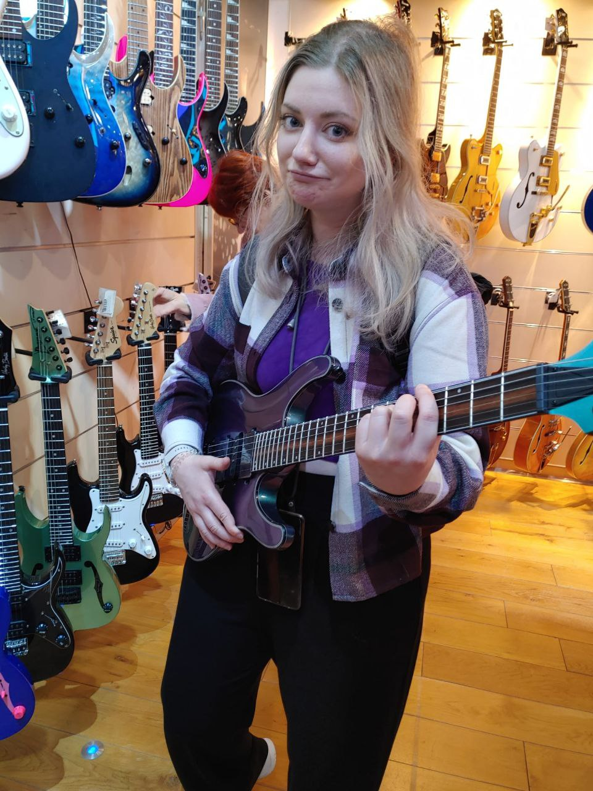
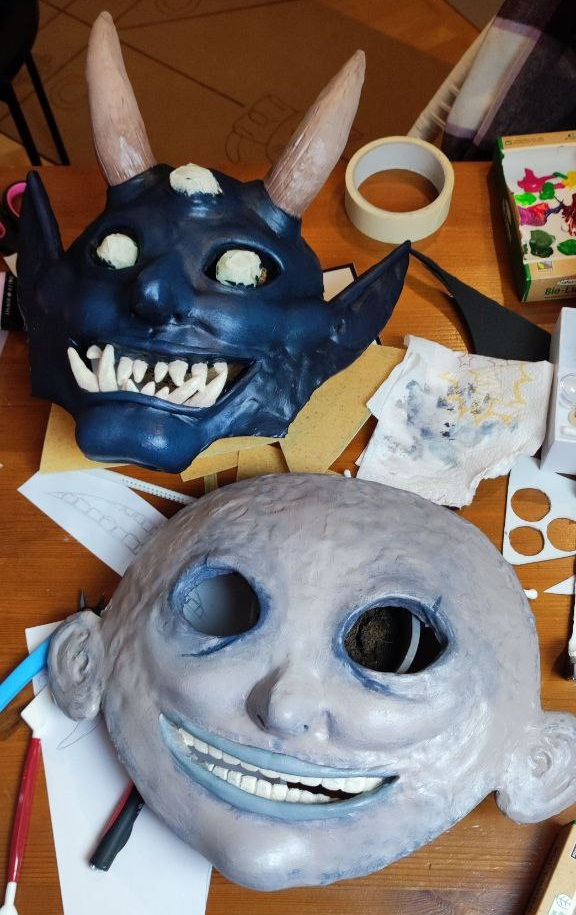
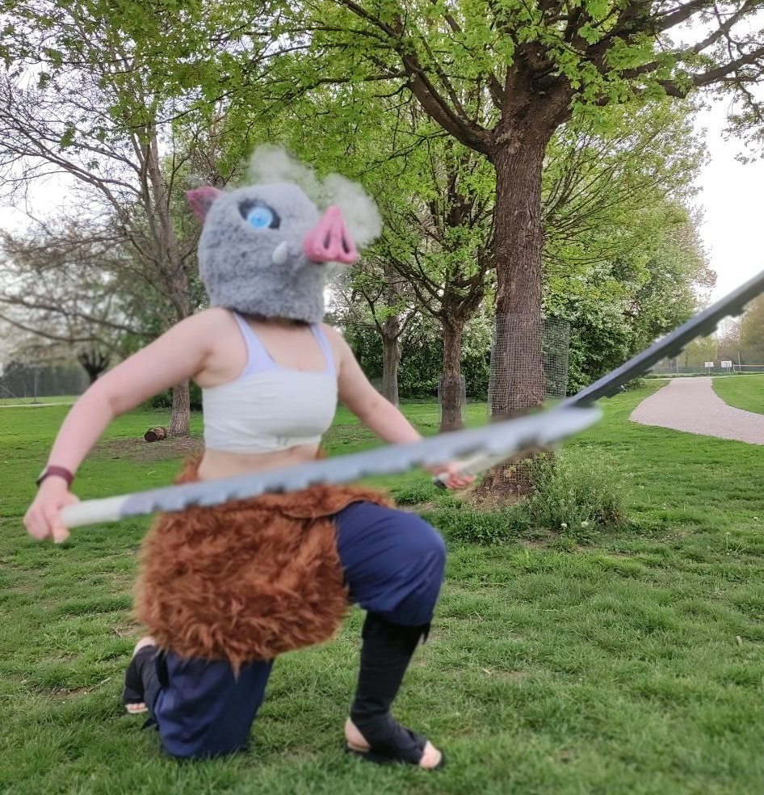
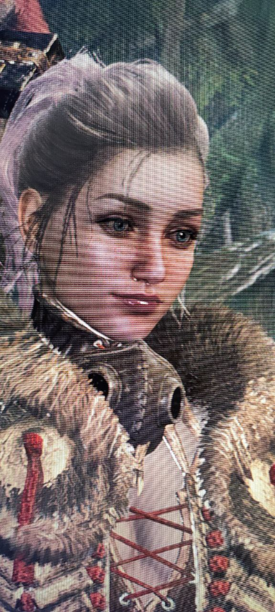
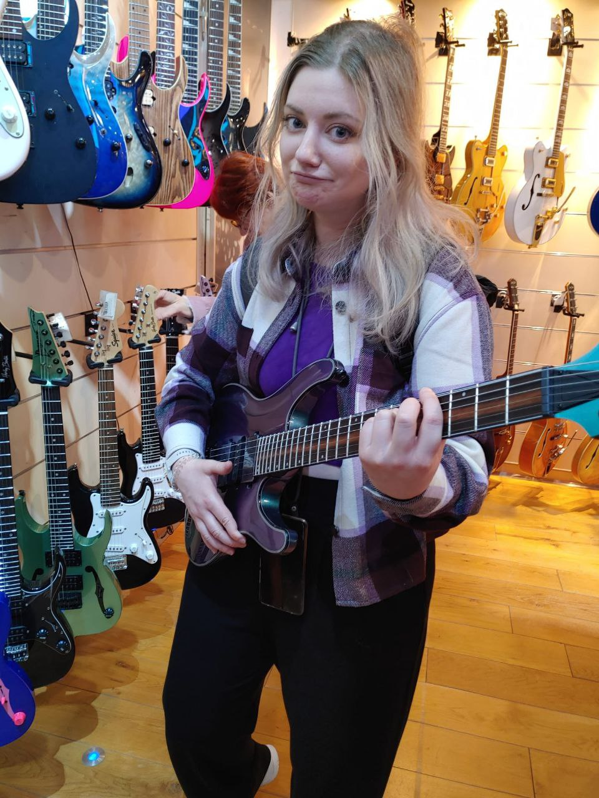
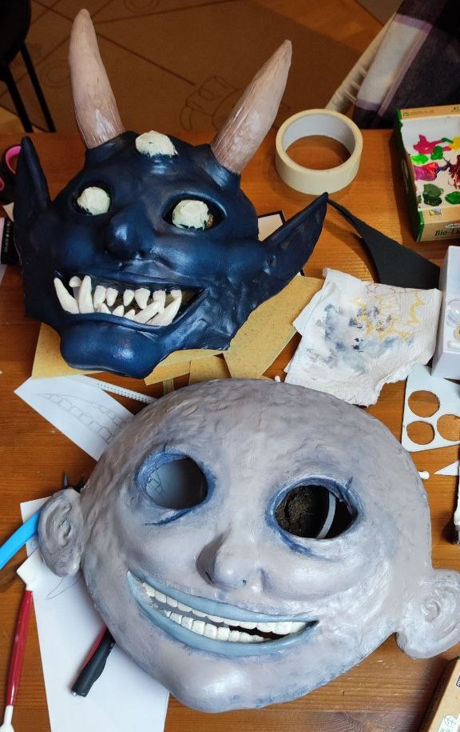
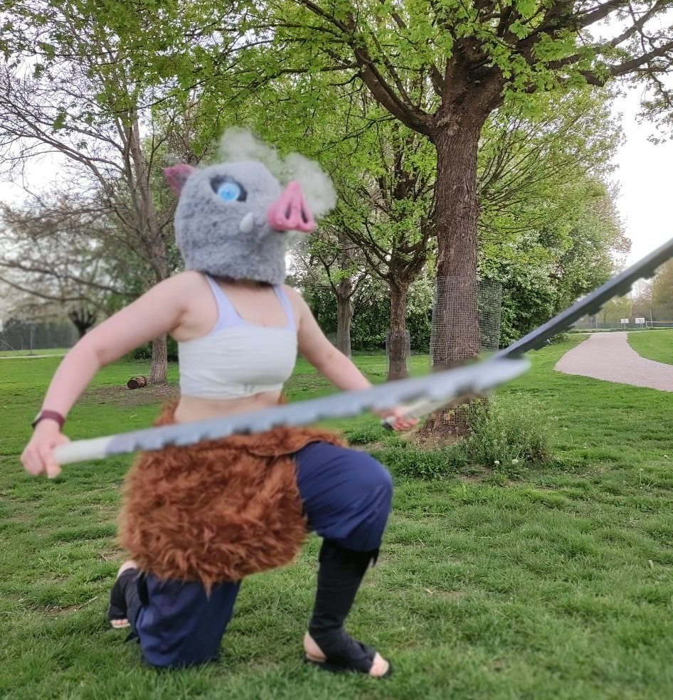
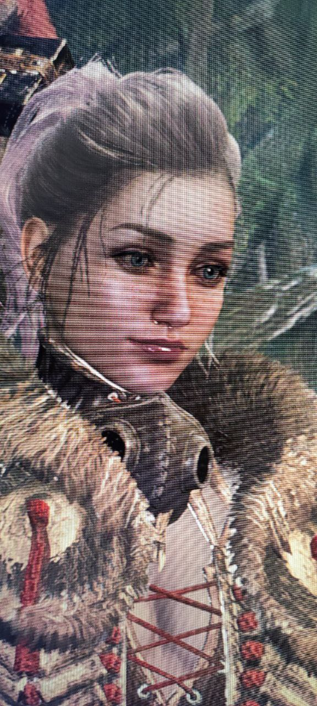

About Me
Hi, I’m Elli — a UX designer and HCI researcher who’s passionate about creating digital experiences that genuinely help people.
Currently, I’m working as a researcher — a role that has deepened my understanding of user behavior, data, and real-world impact. This experience sharpened my ability to ask the right questions, synthesize insights, and advocate for people in every design decision.
Before research, I worked in UX across large organizations and agencies — designing experiences for fintech, and industrial trainings. One project I’m especially proud of involved designing a document management tool with my team, dramatically improving the user journey and satisfaction by digitalizing the document management for mortgage counselors, their customers, and credit grantors. Seeing our work translate into real impact and getting positive feedback from our users was a defining moment for me.
People I’ve worked with describe me as reliable, calm, fast, creative, and easy to collaborate with. I bring a multidisciplinary approach to UX — blending design with a strong technical foundation. I’ve worked on web and mobile apps, as well as immersive experiences. I love connecting the dots between ideas, users, and code.
 







When I’m not designing, you’ll probably find me singing in a band, crafting something with my hands, making music, or getting lost in a good manga, movie, or game.

I’m excited to return fully to UX design — bringing with me a strong foundation in research, technical skills, and a collaborative mindset. Right now, I’m looking to deepen my experience as a UX designer by working on thoughtful, impactful products. In the long term, I’d love to grow into a leadership role — but for now, I’m focused on learning, building, and contributing to great teams. I’m especially drawn to projects in health, education, fintech or entertainment — where design can make a real difference in people’s lives.
Thanks for stopping by my portfolio — feel free to check out my work.